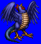
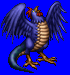
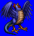
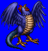

Height: About 50 cm Weight: 5 lbs.
Habitat: Desert Origin: France
Meaning: Old Spanish for "alligator"
An offshoot of the basilisk myth, the cockatrice has the tail of a snake and the body of a chicken. In the middle ages, the myth crystalized into the current myth in which the cockatrice can break stone or kill with its poison breath. Cockatrice eggs are thought to be created from chicken eggs which underwent a special warming process.
See also: Basilisk